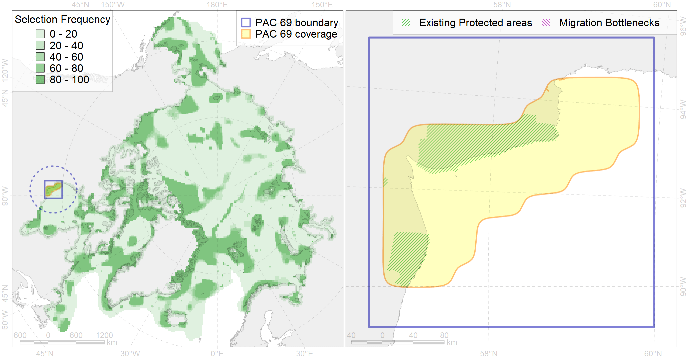

Region 69
Region 69
“ArcNet” scenario 33 achievement for region 69.
Use Accenter for advanced mode.

0
CFs inside of Region completely
6
CFs inside of Region at quarter
3
Complete-targets achievement by Region
9
Half-targets achievement by Region
| CF | Name | Target Achievement for Region | Proportion of Target Achievement in Region | Amount Proportion in Region |
|---|---|---|---|---|
| 5032 | Beluga of the Western Hudson Bay summer core distribution | 112.9% | 98.9% | 85.0% |
| 9037 | polar bear denning areas of WH (Western Hudson Bay) subpopulation | 98.8% | 96.1% | 68.2% |
| 7224 | Kelp forests of western Hudson Bay | 349.7% | 100.0% | 59.5% |
| 8020 | Hudson Bay estuaries | 84.5% | 76.2% | 44.2% |
| 5031 | Beluga of the Western Hudson Bay summer distribution | 65.1% | 63.4% | 36.5% |
| 9019 | polar bear of the WH (Western Hudson Bay) subpopulation distribution | 98.8% | 93.5% | 34.6% |
| 8037 | Salt marshes of the Hudson Bay LME | 71.1% | 50.5% | 22.9% |
| 6064 | Common eider (Somateria mollissima sedentari) Hudson Bay breeding&moulting grounds | 24.5% | 24.3% | 14.6% |
| 7168 | IV.2.1. shallow James Bay | 176.2% | 20.9% | 11.9% |
| 3128 | polynya Hudson W | 69.4% | 28.2% | 9.6% |
| 4007 | Feeding/nursery area of the Cisco (Coregonus artedi) (F 13) | 16.8% | 11.8% | 6.1% |
| 7028 | Hudson Bay enclave | 43.7% | 27.5% | 4.6% |
| 4031 | Feeding area of the Brook Trout (Salvelinus fontinalis) (F 29) | 26.7% | 11.1% | 4.0% |
| 4011 | Feeding area of the Lake whitefish (Coregonus clupeaformis) (F 16) | 8.8% | 8.3% | 3.7% |
| 2010 | Bearded seal whelping areas in the Hudson Bay | 10.4% | 10.4% | 2.8% |
| 4075 | Fish zoogeography, Arctic Region, High-Arctic Shelf Province, Hudson District | 25.0% | 9.0% | 2.5% |
| 2048 | Ringed seal whelping areas in the Hudson Bay area | 9.3% | 8.7% | 2.5% |
| 4048 | Feeding/nursery area of the ogac (Gadus ogac ) (F 41) | 14.3% | 3.6% | 1.9% |
| 2019 | Harbour seal range in the North Atlantic region | 24.2% | 3.7% | 1.6% |
| 3035 | Marginal Ice Zone distribution in July in the Hudson Bay LME | 5.7% | 4.0% | 1.5% |
| 2022 | Harp seal foraging areas in the Hudson Bay | 4.3% | 4.3% | 1.2% |
| 4053 | Range of the Fourhorn Sculpin (Myoxocephalus quadricornis) (F 45), Euro-Asian populations | 33.4% | 2.0% | 1.1% |
| 3022 | Marginal Ice Zone distribution in April in the Hudson Bay LME | 7.2% | 1.7% | 1.0% |
| 6083 | Thick-billed murre (Uria lomvia lomvia) wintering grounds | 2.3% | 1.6% | 0.6% |
| 4029 | Feeding area of the Arctic charr (Salvelinus alpinus), anadromous populations (F28) | 1.1% | 0.9% | 0.5% |
| 7169 | IV.2.2. central Hudson Bay | 7.3% | 2.2% | 0.4% |
| 4055 | Range of the Shorthorn Sculpin (Myoxocephalus scorpius) (F 46), American populations | 12.3% | 0.7% | 0.4% |
| 5112 | Arctic Cetaceans (beluga, bowhead, narwhal) winter habitats as predicterd by MIZ | 0.9% | 0.7% | 0.4% |
| 4041 | Range of the Polar Cod (Boreogadus saida) (F35) | 1.5% | 0.6% | 0.2% |